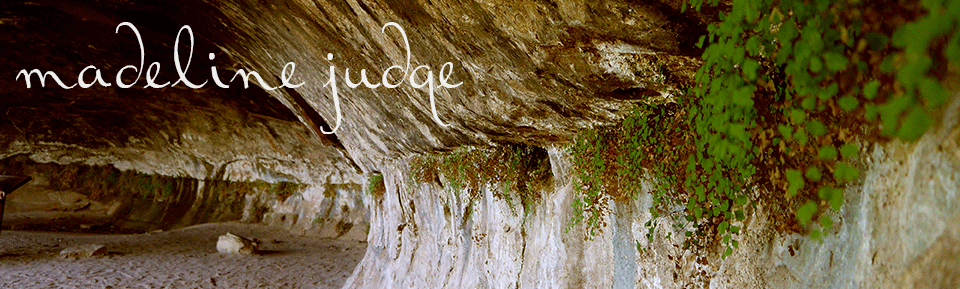

writing
Feeding the Future Grant Abstract
This piece is an abstract from a funded research grant that I have been working on since January 2013. The project is entitled Feeding the Future, and studies the sense of community among members of the Residential Initiative on the Study of the Environment. The project also explores how food and agriculture-related activities and workshops might strengthen the sense of community among first-year students.
River Raisin Center for the Arts Patron Survey
As part of the Students Consulting for Nonprofit Organizations group on campus, I created this survey for a local theater that was looking for new marketing strategies to improve business. The theater was struggling financially, and so the survey had to be something easily printed in-house. It was also designed to be short and sweet so that patrons could fill it out just before the performance started, and so data could be quickly collected.
